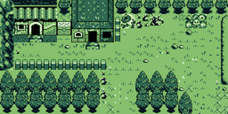
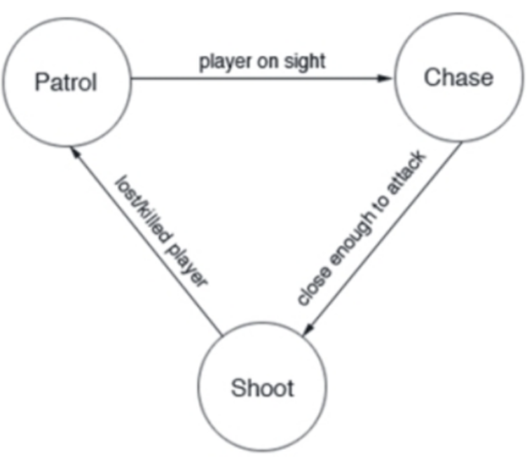
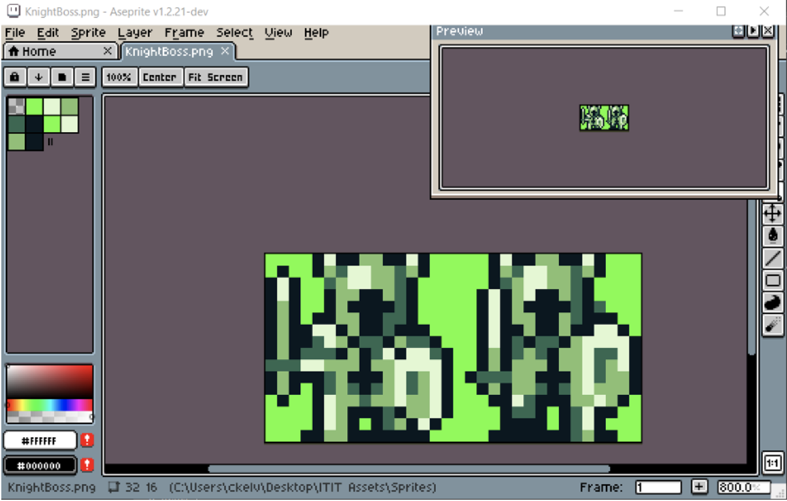
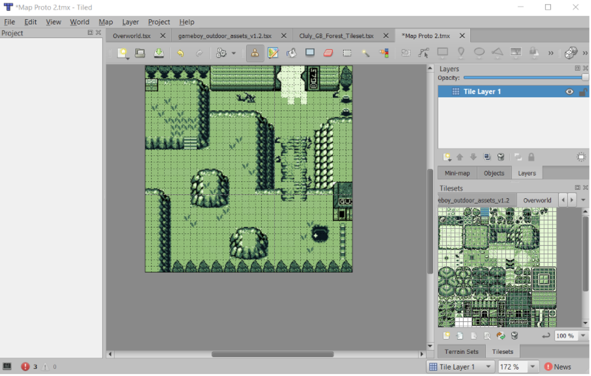
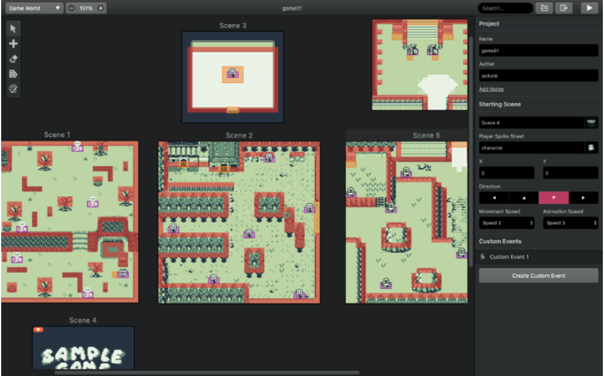

Project Overview

Topic
For our project we aim to create a simple top-down shooter, we hope to be able to create a game with a tense atmosphere of claustrophobia and tension. For the AI that we propose to use in the game, we will use Finite State Machines (FSM). This is one of the most basic and purest forms of enemy behaviours in most games. The FSM is simple because it can only do 1 action at a time and follows a simple flow chart or graph to map its behaviours. Below is a simple chart as an example of an FSM enemy AI. However, to call it an AI is a misnomer, as the NPC follows a simple set of instructions with various ‘while:’ and ‘if:’ functions for actions.
Furthermore, it was reported that 68 percent of Australians play some form of video game with an average time of 88 minutes a weekend (Australian Government, 2016). With such a widespread influence, it is unlikely to find someone who has never played a video game before. Despite the widespread influence of playing video games, most people simply do not know what is going on under the hood of a video game. Beneath the layers of pretty colours and pictures offered to the user, lay a sprawling set of codes for world building, physics, and limitations. These codes and limitations allow for the user to interact within this video game environment.
Motivation
The reason as to why we have chosen to make a game is to interlink and apply the knowledge between the visual product to the inner workings of any program, the code. Additionally, our team seems to have a large curiosity and interest towards AI and machine learning. Machine learning may be a bit advanced for us currently, but we aim to also create some simple AI enemies in our game. We settled on this project as the legitimacy of video games is steadily increasing. No longer are they just a simple pass time for the bored but they are steadily being streamlined into our everyday lives. They are being applied in places of learning as well. Educational games are on the rise and the results are being observed in elementary school students. Digital game-based learning encourages individuals to think critically, and problem solve (Hussein, Ow, Cheong, Thong & Ale Ebrahim, 2019).
Landscape
Video games are prominent in our everyday lives. Both children and adults play games these days. Professional gamers often sign contracts and compete for major prize money in tournaments. A commonly cited statistic of video games is the ever-increasing prize pool touting the legitimacy of competitive video gaming as a career. Below is the growth of the prize pool amounts of a popular Multiplayer Online Battle Arena (MOBA) game, DotA2.
Therefore, creating a video game, and understanding the inner workings and how they come to be are important to understanding the trends of IT. Unfortunately, our video game project lacks a standout feature. If anything, it is more reminiscent of a hobbyist/enthusiast project. However, by making this game, we begin our understanding of the video game industry and the amount of work that is required to produce a finished product. We learn of the essential teamwork and work necessary to be able to produce even just a simple prototype. Though using such a restrictive engine such as GB studios, doesn’t allow for much innovation.
Aims and Goals
Aims
Our project was to create a horror game, where players battle against comprehensive AI enemies with a creative plot. We will develop interesting game modes such as horror background music. The purpose of making a game is that not only are they entertaining but they also teach individuals critical thinking, patience, strategy, etc that schools may not focus on.
This game aims to challenge players to develop a strategic approach in order to achieve goals and overcome obstacles. The player will need to rely on their fight or flight intuition to assess if the situation that they are in is winnable or if they are simply not strong enough yet. The player will have to manage their HP and kill or avoid enemies to espece to the next stage. The game involves experimenting with the positioning of elements to advance the characters. The players are able to try territorial control to focus not necessarily on destroying the enemies, but on controlling and eye-catching certain areas of the figure and other ways to escape. The other interesting part of our game is that players are given a time limit to compel the player to focus and escape to the next stage before getting caught by enemies. In addition, our horror game has explorative features at each stage such as easter eggs. The player will have the chance to explore the environment to find out what our easter eggs are.
Goals
Goal 1: Research how horror games can create responses from the player such as fear and excitement.
Most horror games are survival horror video games (SHVGs). It is designed in such a way to constrict a player’s control in the game (Domsch, 2013). This is achieved through restrictions of movement such as being trapped in an enclosed area with a lack of resources (Domsch, 2013). The aim of this is to increase a player’s vulnerability to invoke fear and anxiety. These elements invoke a desperation in the player to stay alive and when the player succeeds in doing so, this pleasure drives the player to continue playing the game.
Goal 2: Create a responsive prototype with a functional interface taking into consideration game flow, plotline, how the AI enemies attack, and how the player wins and loses.
Game prototyping is an important part of the game development process. It allows us to see if the game idea is possible before investing too much resources into the project. Some outcomes of prototyping include exploring and experimenting with ways to modify game mechanics to make the game more engaging, discovering interface and mechanical problems and basically testing the impact of any changes.
Goal 3: Create and design more elements on Aseprite and Tiled to include into the game.
Pixel art has continued to grow, owing to an increasing web developer group that appreciates it for its iconic value, style, and relative ease of development. There are a variety of tools available to make pixel art. Aseprite is a popular software for practicing pixel art or creating professional-level pixel graphics because of its graphical system and efficient workflow. It allows us to build valuable characters, objects, tools, and customize animations. Since the software is open source, you can get the source code for free and generate Aseprite. Kelvin was able to acquire a copy of Aseprite and was able to dabble in the creation of character sprites. The program itself is pretty easy to use, and we were able to create various asset arts for our project.
Furthermore, for worldbuilding in pixel form we were able to utilize a program called Tiled, which allows us to import assets either created or purchased to be able to arrange the tiles in our own ways to create a map. The maps would then be ported over into GB studios where map limitations and physical boundaries would be added to limit player movement etc.
 Goal 4: Code the game to enable it to run on multiple screen sizes on many devices and different software systems.
We will create a game prototype that utilises javascript on GB Studio. Since javascript can work on any device, players will be able to access the game and play it with no hassle on any device.
